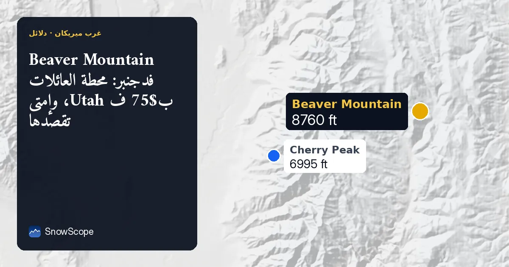

Beaver Mountain فدجنبر: محطة العائلات ب$75 ف Utah، وإمتى تقصدها
Beaver Mountain كاتبرز فـ يوتا لسبب واحد بسيط: سعر التذكرة ديال الشخص الكبير 75 دولار بـلا تغلية فـ الأيام المشغولة. لاكين فاين الحاجة: التوقيت. التاريخ ديال التلج يقول بيك انو البداية ديال ديسمبر هنا رقيقة وما موثوق فيها؛ الحركة الذكية هي تستنى حتى النص ديال الشاني ديال الشهر.
شوف توقعات التلج مباشرة ديال Beaver Mountain فالتطبيق ديال SnowScopeالعلو ديال التلج، التنبيهات والخريطة 3D، فابور.
فين واقعة Beaver Mountain
Beaver Mountain واقعة فـ الراس ديال Logan Canyon فـ الشمال ديال يوتا، فوق البلاصة ديال Logan بـزاف. SnowScope كاتحسب 6 تلفريكات و حوالي 19 ميل (31 كم) ديال البيستات كاتطلع من 7,160 قدم (2,181 م) فـ القاعدة حتى 8,760 قدم (2,670 م) فـ الأعلى. الجبل فيه طابع بسيط: عائلي، وفاين شباك تذاكر بسيط و بـلا قرية كبيرة.
الارتفاع ديال الجبل هو 490 م، هادا كايخليك النص ديال الجبل حوالي 7,960 قدم (2,425 م). هاد الزون ديال المنتصف هي فاين الناس الكاتزلقين كاتقضيو الوقت ديالهم و فاين العلو ديال التلج هو المهم زاف فـ البيستات ديال البداية.

متاع أنا يجي التلج فـ ديسمبر
جدول ديسمبر ديال Beaver Mountain قاسي فـ البداية. فـ النص ديال الجبل، 43 بـ المية ديال الشتوات اللي فاتو عندها تلج مزيان (متوسط أسبوعي 20 سم / 50 سم أو أكتر) فـ الأسبوع الأول ديال ديسمبر. بـ النص ديال الشهر هاد النسبة كاتطلع لـ 54 بـ المية، بـ الأسبوع الثالث لـ 61 بـ المية، و بـ أسبوع الكريسماس لـ 76 بـ المية.
فـ الأرقام البسيطة: 1 ديسمبر عادي فيه 16 سم (40 سم) فـ النص ديال الجبل؛ بـ 15 ديسمبر يوصل لـ 22 سم (57 سم)، و بـ يوم الكريسماس 28 سم (71 سم). فـ القاعدة السفلية، 15 ديسمبر عادي عندو بـ حال 17 سم (42 سم)، و واحد من ثلاثة شتوات بـ حال يوصل لـ 20 سم فـ هاد الديار. شتا ضعيف—واحد من عشرة—كايخليك غير 10 سم (25 سم) فـ النص ديال الجبل بـ النص ديال الشهر، كايجبر الزلقايين يزلقو فـ الطرق المرتبة.

السعر الثابت فـ عالم ديال الأسعار الديناميكية
فـ الموسم 2026–27، التذكرة ديال الشخص الكبير (من 12 لـ 69 سنة) كاتكون 75 دولار الليل كاملة، كل يوم. بـلا تغلية ساعات الذروة. هادا نادر فـ يوتا، فاين معظم المحطات ديالنا الحين كاتستعمل أسعار ديناميكية كاتطلع كاع ما تقرب زيارتك أو تسقط فـ يوم عطلة.
إذا كنت ساكن فـ الديار ديال Logan، الحزمة ديال 10 يوم كاتخفف السعر ديالك: 720 دولار فـ المكتب ديال Logan أو 740 دولار أونلاين. Beaver Mountain كاتشارك كاع فـ Indy Pass: Indy Base Pass هو 419 دولار و فيه يومين فـ كل واحد من 300+ مكان عضو بـ أيام معينة بـلا دخول؛ Indy+ Pass هو 469 دولار بـلا أيام بـلا دخول.
أنا كيفاش تتقارن مع Brighton
Brighton، فـ Big Cottonwood Canyon جنوب Salt Lake، كاتبدي التذاكر الديناميكية ديالها من 72 دولار للشاري المبكر. فـ التاريخ ديال التلج، Brighton كاتجيب تلج أكتر بـ ديسمبر: 37 سم (94 سم) فـ النص ديال الجبل فـ 15 ديسمبر عادي، و 89 بـ المية ديال الشتوات اللي فاتو حاتجاوز 20 سم فـ هاد اليوم.
الاختيار كايتعلق فـ الديار ديالك. Beaver Mountain هو الاختيار الصحيح إذا كنت بـغيت سعر ثابت و كاتقدر تزلق بـ بعد النص ديال الشهر. الارتفاع الأعلى ديال Brighton و الموسم ديال التلج الطويل كايخليهم أكتر آمن لـ رحلة البداية ديال ديسمبر، لاكين كاتدفع أكتر. لـ رحلة عايلية فـ ديسمبر الأخير مع ميزانية ثابتة، تذكرة 75 دولار ديال Beaver Mountain كاتكسب.
البداية ديال الموسم كانت تنقص بـ الزمن
أنماط التلج هنا تبدلت. فـ أول 15 شتا ديال سجل SnowScope (1980–81 لـ 1994–95)، النص ديال الجبل كان متوسطو 26 سم (66 سم) فـ 15 ديسمبر عادي، و 73 بـ المية ديال الشتوات وصلات لـ العلو ديال التلج الكويس بـ هاد الديار. فـ أحدث 15 شتا (2011–12 لـ 2025–26)، هادا نقص لـ 17 سم (43 سم) مع غير 33 بـ المية من الشتوات فوق 20 سم.
الشتا اللي فاتت كانت ضعيفة جداً: غير 10 سم (26 سم) فـ النص ديال الجبل فـ 15 ديسمبر. هاد الاتجاه كايقول بيك انو الصبر كاتدفع. الجبل كاتبني التلج ديالو بـ شكل موثوق بـ أسبوع الكريسماس. رتب الرحلة ديالك لـ ديسمبر الأخير أو بعد هكا، و شوف الخريطة ديال SnowScope قبل ما تسيب Logan Canyon.
فـ الجبل: حاجات بـ حالك تعرفهم
Logan Canyon (US-89) هو طريق جبلي حاد و ملتوي. جيب السلاسل ديال التيرات أو بدل لـ تايرات ثلج قبل ما تسيب. البيستات ديال البداية كاتقدر تخبي الحجارة و الجذور تحت الغطا الرقيق، هكا بـقى فـ الطرق المرتبة حتى القاعدة كاتسمن.
الجهة الفوقانية ديال الجبل، فوق 8,760 قدم (2,670 م)، كاتجمع تلج أكتر و كاتحتفظ بيه أطول. إذا كانت الأحوال ضعيفة فـ القاعدة، البيستات ديال الأعلى هي أحسن رهانك. الزيارات ديال أيام الشغل هي أهدا و غالبا عندها corduroy جديد من البيست مقابل الأيام الموازين.
نصايح للي كيتزلجو
- رتب الرحلة ديالك لـ 15 ديسمبر أو بعد هكا. الاحتمالات ديال التلج الكويس كاتزيد كل أسبوع لـ نهاية الشهر.
- إذا كنت ساكن قرب Logan و كاتزلق بـ الكتر، شري الحزمة ديال 10 يوم أو تدخل Indy Pass بـ جاي ما تدفع كل يوم.
- البداية ديال ديسمبر رقيقة هنا: استعملها لـ رحلة بسيطة فـ أيام الشغل أو كـ خطة البديل إذا محطة ثانية خيبتك.
- إذا الرؤية ضعيفة، بـقى فـ الطرق المرتبة المعلمة. التلج ديال البداية كاتقدر تخبي الحواجز.
- جيب السلاسل؛ طريق الوادي كاتقدر تقفل بـ بعد الثلج الكتير.
على هاد الأرقام
العلو ديال التلج فالمحطات هو أكثر تلج فالجهة الفوقانية فالتاريخ المكتوب؛ هادو تقديرات لمنطقة، ماشي قياس فنقطة وحدة. التوقعات يمكن تتبدل. ديما شوف النشرة الرسمية ديال الانهيارات قبل ما تخرج من البيست.
النشرات الرسمية ديال الانهيارات: Utah Avalanche Center
كيفاش تستاشهد بهاد المقال
للبحث، التعليم ولا الصحافة: الأرقام والرسومات تقدر تعاود تخدم بيهم بحرية تحت CC BY 4.0 مع هاد الاستشهاد.
SnowScope (2026), Beaver Mountain فدجنبر: محطة العائلات ب$75 ف Utah، وإمتى تقصدها, https://snowscope.app/blog/ar/2026/11/beaver-mountain-utah-december-cheap-skiing.html, تشاف ف 2026-11-15
SnowScope (Atlas Labs). (2026, November 15). Beaver Mountain فدجنبر: محطة العائلات ب$75 ف Utah، وإمتى تقصدها. SnowScope snow reports. https://snowscope.app/blog/ar/2026/11/beaver-mountain-utah-december-cheap-skiing.html
BibTeX
@misc{snowscope2026beavermountainutahdecemb,
author = {{SnowScope (Atlas Labs)}},
title = {Beaver Mountain فدجنبر: محطة العائلات ب$75 ف Utah، وإمتى تقصدها},
year = {2026},
month = nov,
howpublished = {\url{https://snowscope.app/blog/ar/2026/11/beaver-mountain-utah-december-cheap-skiing.html}},
note = {Published 2026-11-15 09:34 UTC; accessed 2026-11-15}
}· CC BY 4.0 · الطريقة، الداتا والأدوات →
Beaver Mountain: التلج والحرارة حسب العلو، هاد الشتا مقارنة مع اللي فاتت (الأدوات) →
تابع Beaver Mountain
فابور: ميساج ملي يجي التلج، والتوقعات كل صباح.